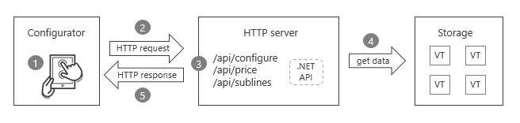
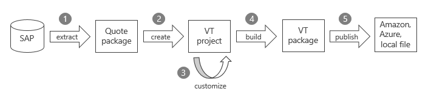
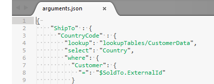

Getting started
What is Configit VT SDK?
Configit VT SDK is a set of tools and APIs that you can use to create configurator applications. The 'VT' stands for Virtual Tabulation ™, Configit's patented configuration technology.
The SDK includes:
vtc, a command line tool for creating, building, and publishing VT packages that contain SAP products, pricing, and BOM.- Configurator API, a .NET class library API with services for configuring products in VT packages.
- A self-hosted HTTP server that exposes the Configurator API as a REST API.
- A sample VT SDK configurator web application.
The SDK does not, at this time, support product models authored in other Configit products (Ace, Build, Model).
Overview
The following sections give an overview the SDK's key concepts:
Some familiarity with product configuration and SAP concepts is useful, but not required.
Configurators
Let's take a look at the flow of a VT SDK configurator web application, or configurator for short.

Step 1: User interaction
First, the user interacts with the configurator UI by making assignments to products or pricing. For example, they can:
- Select a value in the configuration, such as the color of a product.
- Enter a pricing value, such as giving a discount.
Step 2: Making an HTTP request
Next, the configurator makes an HTTP POST request with a JSON body to a service on the HTTP server. The services are stateless; as a result, a request typically includes all assignments the user has made throughout their configuration session.
Step 3: Processing the request
The HTTP server receives the request at one of these endpoints:
/api/configure, for configuring a single product./api/price, for customizing the pricing of a single product./api/sublines, for configuring a multilevel product.
The endpoints are stateless, thread-safe REST services that wrap the Configurator API class library services.
Step 4: Retrieving VT package data
A service gets its product and pricing data from a VT package located on disk or in the cloud. VT packages are described in the next section.
Step 5: Handling the response
Lastly, the server returns the response with a JSON body, and the configurator updates its UI accordingly.
/api/configurereturns the entire configuration of a product, with pricing. The configuration includes all variables (characteristics in SAP), their values, and the states of the values (for example, whether they are assigned)./api/pricereturns a product's price sheet, with totals (net value, tax, and total price) and price lines that describe how the sheet is calculated./api/sublinesreturns the BOM of a multilevel product, including its subproducts and pricing.
Creating VT packages
VT packages are collections of data including configurable products, standard (non-configurable) products, pricing information, and BOM. They also have view data like translated texts, properties, and structure for how to organize configurations in a UI.
Below shows the process for creating a VT package from SAP master data:

Step 1: Extracting from SAP
First, you use the Configit Quote SAP Extractor to extract data from SAP into a Quote package.
Step 2: Creating a VT project
Next, you use the vtc command line tool to create a VT project that references the Quote package. The project is where you make customizations to your data.
A VT project exists on disk as a collection of files and folders. At its root is a config.json configuration file specifying:
- The location of the source Quote package.
- The path on disk where to build the project into a VT package.
- Publish targets (such as the cloud) for where to deploy the VT package.
Step 3: Customizing VT project contents
During this step, you can customize:
- Lookup tables, supplementary data you can access at runtime. Examples include customer lists, sales areas, and product hierarchies.

Arguments, values used by the services when solving configurations and calculating prices. Arguments can be static or dynamic, with dynamic arguments getting their values from lookup tables. For instance, you can select which currency to use based on the sales area.
Price functions, which let you customize the behavior during pricing. There are two kinds: requirements and alternative calculation types. Requirements are called when a price step or an access sequence is activated. Alternative calculation types are used to calculate the value of a price line.
Solve functions, which your SAP models can refer to. There are two kinds: variant functions and pfunctions. Variant functions return simple values and are used in dependencies in your SAP models. Pfunctions can change the state of the configuration, the valid domain of a characteristic, or even the SAP environment itself.
Step 4: Building the VT package
After your customizations are complete, you use vtc to build the project contents into a VT package. The VT package is built on disk at a location specified in the project's config.json file.
Step 5: Publishing the VT package
Finally, you use vtc to publish the package to a location on disk or in the cloud at Amazon S3 or Azure Blob storage. The package is now ready for use by your configurator.
When you publish, the VT package gets versioned with a GUID. You can use GUIDs to target specific package versions, for example, to protect a user's configuration session from being impacted by newly published packages.
Updating VT packages
When your SAP master data changes, you can update your VT packages accordingly. To do so:
- Extract your SAP data into a new Quote package.
- In your VT project, replace the previous Quote package with the new Quote package.
- Revisit your customizations (lookup tables, arguments, pricing functions, solve functions), editing them as necessary to be aligned with changes in the master data.
- Rebuild and publish the VT package.
Further reading
- See Guides for details on VT SDK concepts and the tools it ships with.
- See Configurator API for reference material on the services and their request/response data types.